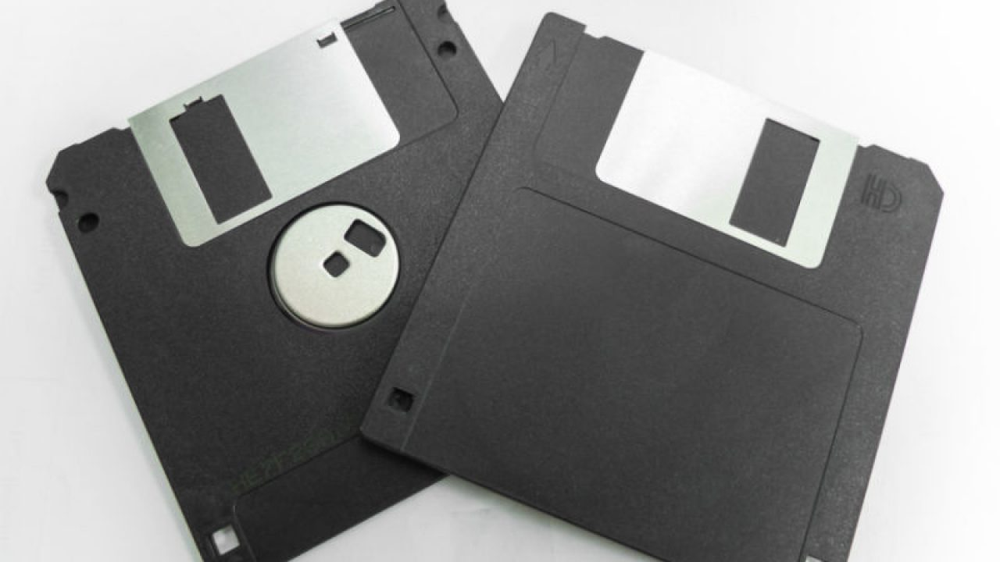
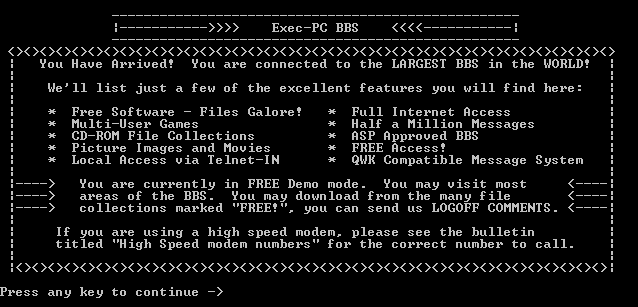
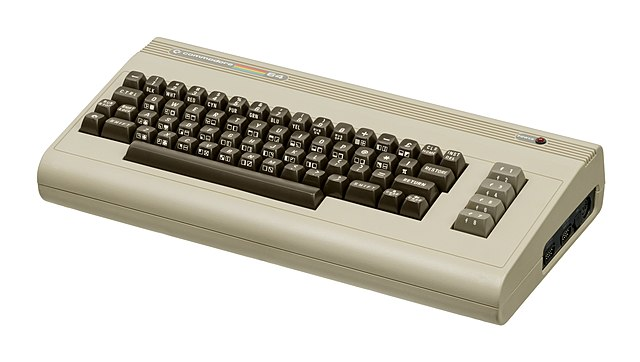

Introdução a Demoscene
Criado por:
Nota: A navegação funciona com swipe ou com as teclas direccionais, incluindo para cima e baixo.
É a cultura da criação de arte em tempo real pela história da computação caseira.
Demo |
Scene |
Abreviação de aplicações informáticas de demonstração. |
É o panorama desta cultura, criações, história, eventos e pessoas. |
O que são demos?
São aplicações, não interativas
Demostram a habilidade artística de um grupo de pessoas para criar
uma curta animação.
Produção audio-visual em tempo-real
São o resultado do trabalho de programadores, músicos, pintores digitais,
modeladores 3D, fotógrafos e editores de video.
Sem fins lucrativos
Criação de arte independente de conteúdo comercial e em geral sobre
alçada Creactive Commons.
Demos Icónicas
|
Second Reality por Future Crew Demo para MS-DOS |

|
Das primeiras aplicações com gráficos em tempo real 3D, que quebrou as concepções do que se conseguia fazer nesta plataforma.
Demos Icónicas
|
.the .product por Farbrausch Demo para Windows em 64kB |

|
Uma demo de um dos grupos mais conhecidos da demoscene, é caracterizada pelo seu pequeno tamanho, requerendo algoritmia avançada para gerar o conteudo visual e sonoro.
Demos Icónicas
|
Elevated por Rgba Demo para Windows em 4kB |

|
Mais um exemplo de size-coding, em que o código principal de sintetização dos gráficos corre exclusivamente no processador gráfico, permitindo geração de um mundo virtual sem o recurso convencional a geometria.
Demos Icónicas
|
Starstruct por The Black Lotus Demo para Amiga 1200 |

|
Uma produção audio-visual muito bem conseguida para uma plataforma criada em 1992, que recorre a diversos truques para ultrapassar os limites computacionais da plataforma.
Demos Icónicas
|
Heaven Seven por Exceed Demo para MS-DOS/Windows |

|
Utilização de ray-tracing em tempo real, 20 anos antes da normalização de hardware grafíco para ray-tracing.
Origem da Demoscene
Década de 1980
O inicio do acesso a computação em casa.
Cracks de Software
Programas de removiam as protecções anti-copia.
Copy Parties
Eventos em que os participantes partilhavam copias de software.
Tagging/Grafiti Digital
As alterações ao software original eram marcados com a tag do grupo responsável.
Bulletin Board Systems (BBS)
Antecessor do IRC, foruns e redes sociais, terminais remotos acessiveis por dial-up.
Década de 1980
Massificação do acesso a computadores
A necessidade de acesso a software de produtividade e jogos levou a distribuição de formas menos legais.
Mecanismos de protecção
Introdução de diversos mecanismos de detecção de copias ilegais do software. Como alterar a forma como os dados eram escritos nas disquetes.
|  |  |
Cracks de Software
Crackers
Grupos de pessoas que analisavam o código das aplicações para remover os mecanismos de protecção anti-copia.
Grafiti Digital
As alterações ao software eram também estéticas, de forma a deixar a impressão digital dos criadores do crack no software.
 |
Copy Parties > Demoparties
|
Copy Parties Cracktro Demoparties |

|
BBS
Bulletin Board System
São os predecessor de foruns e redes sociais, apenas acessiveis por dial-up entre dois computadores, em que se partilhava cracks, demos, novidades e mensagens entre utilizadores.
ASCII/ANSI Art
Uma das formas de transmitir imagens pela consola, colorir caracteres especiais e assim compor imagens.
|  |  |
Plataformas da Demoscene
Primeiros computadores caseiros de 8 bits
Início e década de 1980: Spectrum ZX, Commodore 64, Amastrad CPC
Computadores de 16 bits
Fim de 1980 e inicio de 1990: Commodore Amiga, MS-DOS
Computação moderna de 32/64 bits
Fim da década de 1990 e tempo atual: Windows PC, Apple, Browser
Consolas de Jogos
Megadrive, Playstation, Nintendo 64, etc...
Computadores de 8-bits (Déc. 1980)
Preços Acessíveis
Para além de serem maquinas mais simples, usavam principalmente a TV da sala como monitor, reduzindo o custo geral.
Programáveis
Era comum estes computadores permitirem correr e escrever programas em BASIC.
Recursos Limitados
A memória RAM inferior a 64kB, resolução gráfica até 320x200 e 16 cores.
| ZX Spectrum | Commodore 64 | Amstrad CPC |
|  |  |
Computadores de 16 bits (Déc. 1980)
Gama Superior
Máquinas mais complexas e para fins profissionais, com monitores dedicados e mais hardware dedicado a processamento de som e video.
Expansíveis
Possibilidade de alterar memoria, processador e acrescentar outros componentes.
| Amiga 1000 | Macintosh Plus | IBM PC |
Computação moderna de 32/64 bits
Capacidade Computacional
As especificações técnicas das maquinas deixaram de ser fator limitativo na criação demos.
Processadores Gráficos Programáveis
A introdução de hardware dedicado para o processamento dos gráficos e sua programação permitiu quebrar várias barreiras na renderização.
Programação mais flexível
A possibilidade de correr código em Javascript/Python/C#/Java/Haskel.
Consolas de Jogos
Hardware descontinuado para as massas
Após duas décadas a ser usados em computadores pessoais, chegaram a casa exclusivamente para entertenimento.
Cartuxos programáveis e Add-ons
Desenvolvimento de compiladores e hardware de suporte não oficiais, permitiram criar novo conteudo para estas maquinas.
Demoparty
Partilhar o entusiasmo de criar
Trocar impressões com outros artistas e programadores, partilhar conhecimento das técnicas empregadas usada nas criações.
Eventos Internacionais
Juntam pessoas de diferentes paises e culturas, pela Europa e noutros continentes.
Diversas Competições
Demos, Size Coding, Música, Imagem, Video, Wild
Razões Extra
Concertos, Shader-Showdown, Talks
Partilha e Convivio
Mostra de projectos pessoais
Demonstração e partilha de pormenores das criações.
Reencontrar Amigos
Partilha presencial de histórias, eventos com pessoas que só se vêem uma vez por ano.
Retro-Computing
Mostra de máquinas antigas que correm software antigo e moderno.
Eventos Internacionais
Europa
Um pouco pela Europa toda mas principalmente a Norte (Filândia, Suêcia) e Centro (Alemanha e Polonia)
Intercontinental
Conta com eventos na Australia, USA, Canada, Japão, Argentina
LAN-Parties
Em algumas circunstâncias decorrem em simultâneo com eventos de video-jogos em rede local, como na Assembly (Filândia) ou na Euskal (Espanha)


Competições
Aplicações
Demos,
Size Coding(64KB até 8 bytes),
Jogos
Música
Executável,
Tracker,
Stream
Gráficos
Fotos,
Desenho/Pintura 2D,
Modelação/Renderização 3D
Atuações ao Vivo
DJ Set
Atuações ao vivo de artistas convidados.
Talks
Apresentações sobre projectos, hardware, tecnologias e ferramentas.
Shader Showdown
Competição de programação de shaders em tempo-real.
BigScreen
Visualização de demos de eventos passados.
Demoscene na Atualidade
"The Scene is Dead"
Apesar de usar plataformas descontinuadas, continua a juntar todos anos pessoas em todo o mundo e a criar novas produções.
Candidatura a Patrimonio Imaterial da Humanidade
A primeira submissão de arte-digital à UNESCO.
Variedade
Abertura a outras plataformas modernas como Browser, tem introduzido novas pessoas a scene.
Demoscene em Portugal
Inercia Demoparty
A demoparty Portuguesa mais conhecida desde 2001 que conta já com 16 edições.
Associação Inercia
Criada em 2022 para suportar a organização dos eventos públicos e escalar o evento.
Momentum
Evento mensal de meet-up em Lisboa/Almada para falar da demoscene.
Links
Inercia DemopartyDemoparty nacional.
MomentumEncontro mensal nacional da demoscene.
Art Of CodingMais informações sobre a candidatura a patrimonio imaterial da humanidade.
DemoZooRepositorio de todas as produções da demoscene.
SceneSatSite de radio online de musica da demoscene.
Obrigado!
2023